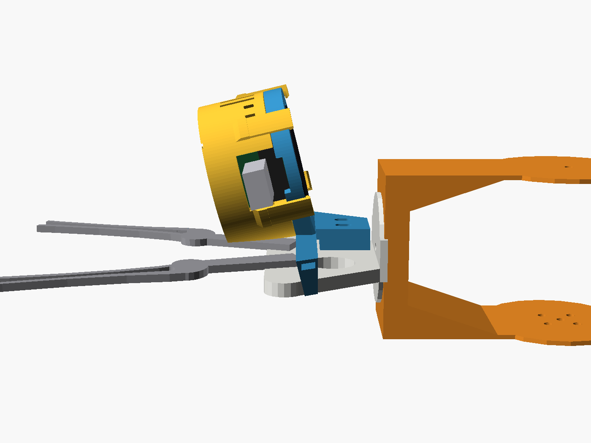
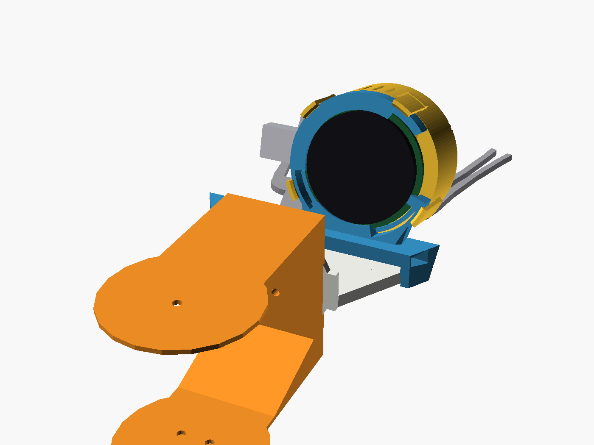
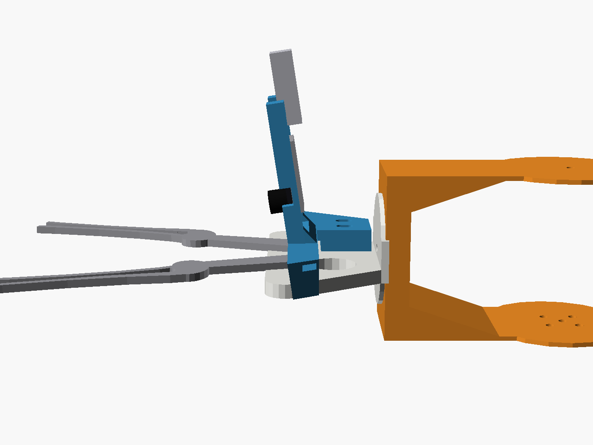
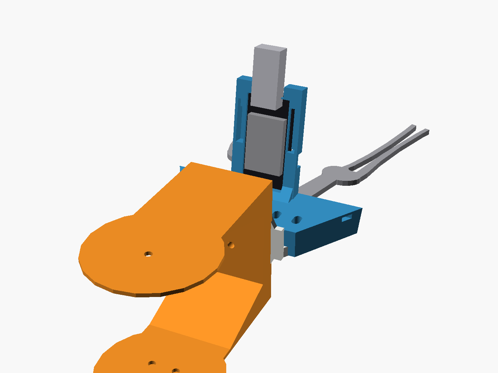

ARDUINO UNO Q / BRACCIO
Printable parts and models
Everything here is generated from hardware/ in the repository. Three licences apply, one per group, and each is stated beside its downloads. The Studio software itself is MIT.
Two camera options for pick and place. Each stands on the flat face of the gripper block, just behind the finger pivots, and looks forward along the fingers and down at the point the claws are about to close on. Because it is on the gripper it follows wrist roll. Licence: CC BY-SA 4.0. The pictures include the GPL-3.0 arm meshes.




| Holder | Aimed in front of the finger mount | Tilt | Lens above the gripper centre line | Closed claws cover |
|---|---|---|---|---|
| braccio_gripper_xiao_round_display_near.stl | 90 mm | 17.3 deg | 21.0 mm | 20 percent of the picture |
| braccio_gripper_xiao_round_display.stl | 120 mm | 13.3 deg | 22.8 mm | 13 percent |
| braccio_gripper_xiao_round_display_far.stl | 180 mm | 9.0 deg | 24.8 mm | 8 percent |
| braccio_gripper_esp_eye_near.stl | 90 mm | 11.3 deg | 16.5 mm | 29 percent |
| braccio_gripper_esp_eye.stl | 120 mm | 8.6 deg | 17.0 mm | 23 percent |
| braccio_gripper_esp_eye_far.stl | 180 mm | 5.8 deg | 17.5 mm | 15 percent |
The claw tips are 61.4 mm in front of the finger mount, so the default aims 59 mm past them. Open and half-open claws are outside the picture; the cover figures are for claws fully closed, measured on the model's flat 101 mm blades with a 66 degree lens.
Downloads
- Fit pieces, to print first: braccio_gripper_xiao_round_display_fit_test.stl (the display ring) and braccio_gripper_esp_eye_fit_test.stl (the ESP-EYE frame).
- Sources: braccio_gripper_xiao_round_display.scad, braccio_gripper_esp_eye.scad and the saddle they share, braccio_gripper_camera_lib.scad. Every dimension is a named value with where it came from.
- Pictures: braccio_gripper_xiao_round_display_preview.png, braccio_gripper_esp_eye_preview.png, and the four above.


Parts list
- Either a Seeed Studio Round Display for XIAO with a XIAO ESP32S3 Sense on soldered pin headers, or an Espressif ESP-EYE v2.1.
- To fix it: 1 or 2 cable ties, 2.5 mm or 3.6 mm wide and at least 200 mm long, or 2 x M3 screws.
- A USB cable with slack for the wrist. The round display can run from a small LiPo with a JST 1.25 plug instead.
Measure the gripper first
The saddle is drawn from the simulation mesh, which shows the gripper block as a 4.5 mm plate. Yours is thicker and carries the gripper servo. Measure the width of the face at two points along it, and the thickness, and set block_half_width, block_taper, block_thickness and servo_clear in the shared source before you export a holder.
- Print the fit piece for your camera and press the board into it. The round display goes in from the back, screen first; the ESP-EYE goes in back first, camera end under the fixed hook, then the USB end past the two latches.
- If it is tight or loose, change
board_fitorboard_slackand export again. Check the values marked ESTIMATE in the source against your board. - Print the holder as exported, lens side on the bed. PETG or PLA, 0.2 mm layers, 4 walls, 30 to 40 percent infill, no supports. Bridges are 12 mm or less.
Fit it with cable ties
- Sit the saddle on the top face of the gripper block, jaws down the two sloping edges, and push it forward until the jaws are snug.
- Thread a tie through the front tunnel, just behind the finger pivots, and round the block. It passes over the finger bases in a bridge, clear of them. Add the rear tie, behind the servo, if you want two.
- Keep the gripper servo lead outside the ties, open and close the claws by hand to see nothing rubs, then pull the ties tight and trim them.
Fit it with screws
- The pad has two slots for M3 screws. None of the references this part was drawn from shows a fixing point on the gripper block, so their position is a placeholder.
- Find two holes or studs on your gripper block, measure them, and set
screw_spacing,screw_centre_xandscrew_z. Export and print.
Software
| Piece | State |
|---|---|
| ESP-EYE to the Studio | Written: firmware/esp_eye_camera serves snapshots and MJPEG over HTTP, or frames over USB serial. |
| Camera picture and a result on the round display | Written, in a separate repository: executorch-zephyr-xiao-esp32s3. Zephyr firmware for the XIAO and round display that shows the camera crop, the digit an MNIST model reads from it and the inference time. It does not talk to the Studio. |
| Colour pick and place from the XIAO's detections | Written, simulated only: docs/pick-place.md. python -m sketch_artist.pick_place_cli reads one DET line per frame from the XIAO over USB, finds bricks by colour, picks them and drops them in a parts bin, with no depth sensor. Dry-run unless --live is given. It has not been run on a real arm, and the detector firmware for the XIAO is separate. |
| Streaming the XIAO camera to the Studio | Not written. |
| Showing pick-and-place detections on the round display while streaming | Not written. |
Pencil grips, pen fingers and camera mounts for the Braccio, with their OpenSCAD sources. All of them are licensed under CC BY-SA 4.0, the licence in hardware/pencil-grip/LICENSE, not the MIT licence that covers the software. Sizes are the bounding box in millimetres.
| STL | What it is | Size (mm) | Licence | Source |
|---|---|---|---|---|
| braccio_gripper_xiao_round_display.stl119 kB | Gripper-top holder for the XIAO round display, aimed 120 mm in front of the finger mount | 78.8 x 64.7 x 23.3 | CC BY-SA 4.0 | braccio_gripper_xiao_round_display.scad |
| braccio_gripper_xiao_round_display_near.stl126 kB | The same holder aimed 90 mm in front | 77.9 x 65.6 x 21.3 | CC BY-SA 4.0 | braccio_gripper_xiao_round_display.scad |
| braccio_gripper_xiao_round_display_far.stl118 kB | The same holder aimed 180 mm in front | 80.9 x 63.5 x 25.3 | CC BY-SA 4.0 | braccio_gripper_xiao_round_display.scad |
| braccio_gripper_xiao_round_display_fit_test.stl92 kB | Fit piece: the display ring and latches only | 50.7 x 51.7 x 6.2 | CC BY-SA 4.0 | braccio_gripper_xiao_round_display.scad |
| braccio_gripper_esp_eye.stl48 kB | Gripper-top holder for the ESP-EYE, aimed 120 mm in front of the finger mount | 82.3 x 61.4 x 26.5 | CC BY-SA 4.0 | braccio_gripper_esp_eye.scad |
| braccio_gripper_esp_eye_near.stl47 kB | The same holder aimed 90 mm in front | 81.7 x 62.2 x 25.8 | CC BY-SA 4.0 | braccio_gripper_esp_eye.scad |
| braccio_gripper_esp_eye_far.stl47 kB | The same holder aimed 180 mm in front | 83.1 x 60.4 x 27.3 | CC BY-SA 4.0 | braccio_gripper_esp_eye.scad |
| braccio_gripper_esp_eye_fit_test.stl16 kB | Fit piece: the ESP-EYE frame and latches only | 28.8 x 49.6 x 5.7 | CC BY-SA 4.0 | braccio_gripper_esp_eye.scad |
| braccio_wrist_camera_mount.stl321 kB | Wrist mount for an ESP-EYE | 46.8 x 25.2 x 17.7 | CC BY-SA 4.0 | braccio_wrist_camera_mount.scad |
| braccio_camera_finger.stl709 kB | ESP-EYE cradle beside a whole finger | 38.0 x 17.8 x 61.9 | CC BY-SA 4.0 | braccio_camera_finger.scad |
| braccio_pen_finger_8mm.stl299 kB | Pen collar beside a whole finger, 8 mm bore | 38.0 x 34.7 x 61.9 | CC BY-SA 4.0 | braccio_pen_finger_8mm.scad |
| braccio_pen_finger_10mm.stl308 kB | Pen collar beside a whole finger, 10 mm bore | 38.0 x 36.7 x 61.9 | CC BY-SA 4.0 | braccio_pen_finger_10mm.scad |
| braccio_pencil_grip_8mm.stl307 kB | Split collar in place of a finger, 8 mm bore | 38.0 x 15.3 x 54.5 | CC BY-SA 4.0 | braccio_pencil_grip_8mm.scad |
| braccio_pencil_grip_10mm.stl312 kB | Split collar in place of a finger, 10 mm bore | 38.0 x 17.4 x 54.5 | CC BY-SA 4.0 | braccio_pencil_grip_10mm.scad |
| braccio_camera_mount.stl180 kB | Older camera mount in place of a finger | 38.6 x 30.3 x 53.8 | CC BY-SA 4.0 | none |
| braccio_wrist_camera_bracket.stl235 kB | Older, larger wrist bracket | 56.0 x 44.0 x 49.0 | CC BY-SA 4.0 | none |
| braccio_mount_reference_mm.stl199 kB | The original Braccio finger, used by the sources above | 38.0 x 14.6 x 61.9 | CC BY-SA 4.0 | none |
| Shared source | What it is | Licence |
|---|---|---|
| braccio_gripper_camera_lib.scad | Gripper saddle, ties, screw slots and aim, shared by the two gripper-top holders | CC BY-SA 4.0 |
| braccio_grip_lib.scad | Shared clamp and finger geometry | CC BY-SA 4.0 |
| braccio_pencil_grip.scad | Split collar, all bore sizes | CC BY-SA 4.0 |
| braccio_pen_finger.scad | Pen finger, all bore sizes | CC BY-SA 4.0 |
Seven meshes of the arm itself, copied unmodified from lots-of-things/braccio_moveit_gazebo (article) and licensed under the GNU General Public License v3.0. They are simulation visual meshes, one simplified shape per link, in millimetres. They are not print-ready arm parts: servos, screws and the gripper linkage are not modelled. See the README in the folder.
| STL | Link | Size (mm) | Licence |
|---|---|---|---|
| braccio_base.stl91 kB | Base | 106.5 x 106.5 x 97.0 | GPL-3.0 |
| braccio_shoulder.stl172 kB | Shoulder link | 58.0 x 35.0 x 170.0 | GPL-3.0 |
| braccio_elbow.stl172 kB | Elbow link | 58.0 x 35.0 x 170.0 | GPL-3.0 |
| braccio_wrist_pitch.stl61 kB | Wrist pitch link | 57.0 x 49.0 x 85.0 | GPL-3.0 |
| braccio_wrist_roll.stl17 kB | Wrist roll link | 77.2 x 38.0 x 40.0 | GPL-3.0 |
| braccio_left_gripper.stl11 kB | Left gripper blade | 17.7 x 2.5 x 100.9 | GPL-3.0 |
| braccio_right_gripper.stl11 kB | Right gripper blade | 17.7 x 2.5 x 100.9 | GPL-3.0 |
Also in this group, under the same licence because they include the meshes: gripper_cameras_on_gripper.scad, the scene that draws the camera holders on the gripper, and the four pictures rendered from it.